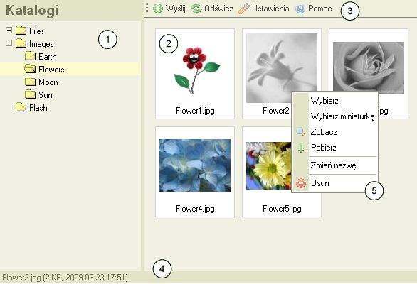

CKFinder - Interfejs Użytkownika
Interfejs użytkownika został zaprojektowany tak, aby był przejrzysty i intuicyjny
nawet dla nowych użytkowników. Większość dostepnych komend jest łatwo dostępna przy uzyciu menu kontekstowego myszy
i może zostać wykonana jednym kliknięciem.
Poniżej przykładowy zrzut z ekranu przedstawiający CKFindera:

- Drzewo katalogów: zawiera listę katalogów w postaci "drzewa", po którym można nawigować.
Katalogi służą do lepszego zorganizowania plików.
- Drzewo plików: wyświetla listę plików w aktualnym katalogu.
- Pasek narzędzi: zestaw przycisków, które po kliknięciu wykonują odpowiednie funkcje.
- Pasek statusu: przestrzeń używana do wyświetlania informacji
odnośnie wybranego pliku, ilości plików w katalogu itp.
- Menu kontekstowe:
zestaw pozycji dostepnych po kliknięciu na wybrany obiekt prawym klawiszem myszy.
Służy ono do wykonywania operacji specyficznych dla danego obiektu.
Dostępne operacje zmieniają się w zależności od tego, co zostało wybrane.